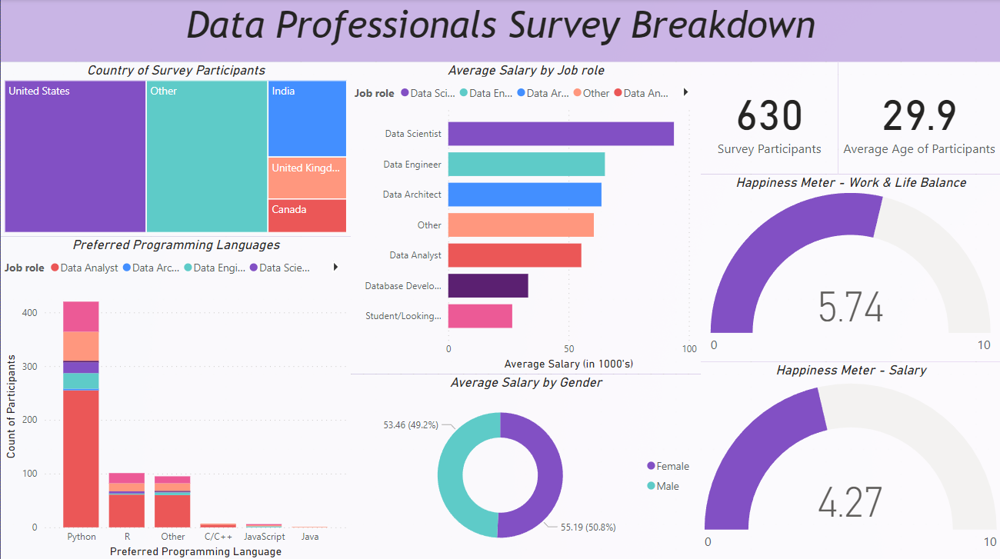
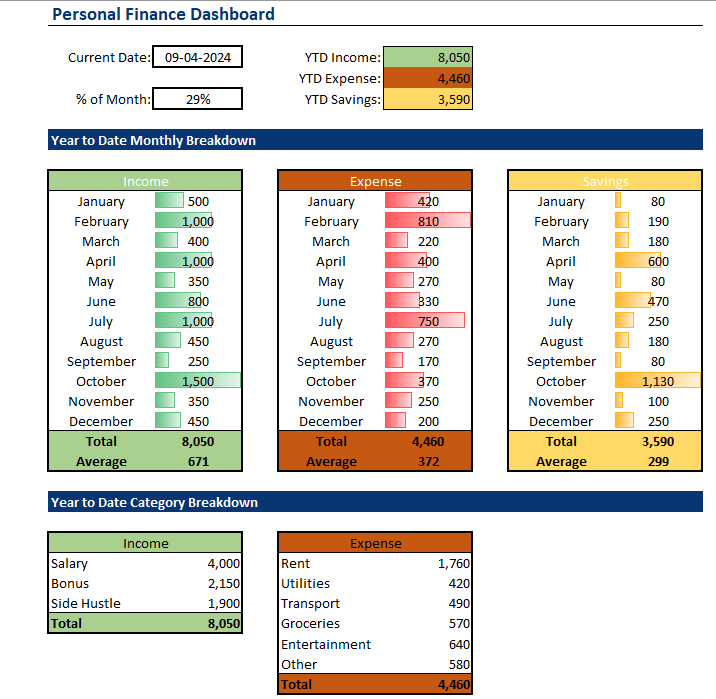

The "Startup Success Prediction" project utilizes machine learning to forecast the success or failure of startups based on diverse factors such as funding rounds and industry type. By analyzing data on startup performance, including financial milestones like M&A or IPO, the project assists investors in identifying high-growth potential companies early on. With structured data preprocessing, model building, and evaluation, it offers a comprehensive approach to predicting startup success.

This project offers a comprehensive visualzation of the data industry, highlighting key trends in demographics, job roles, language preferences, gender pay parity, and happiness metrics based on a real-time survey conducted with 630 professionals.
This project showcases a comprehensive guide to training a Convolutional Neural Network (CNN) using PyTorch for classifying handwritten digits from the MNIST dataset. It covers data loading, model definition, training, and testing, providing a practical demonstration of deep learning concepts. With detailed instructions and customizable configurations, it serves as an excellent resource for enthusiasts and learners exploring image classification techniques with PyTorch.
This project offers a comprehensive approach to detecting fake news related to COVID-19, encompassing data preprocessing, model training, and evaluation. Leveraging machine learning and deep learning techniques, it aims to create a robust system for identifying misinformation. With detailed code structure and usage instructions, it serves as a valuable resource for combating misinformation during public health crises.

Take control of your finances with the Personalized Finance Tracker Excel project! Simplify your financial journey by effortlessly recording income and expenses, visualizing your finances with insightful dashboards, and customizing categories to suit your needs. With easy data entry and comprehensive visualization, managing your money has never been easier!